Stochastic process definitions¶
In this document, we note:
 a multivariate
stochastic process of dimension
a multivariate
stochastic process of dimension  , where
, where
 is an event,
is an event,  is a domain of
is a domain of
 ,
, 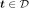
is a multivariate index and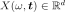
;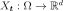
the random variable at index defined by
defined by
 ;
;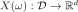
a realization of the process , for a given defined by
, for a given defined by
 .
.
 ,
,  may be interpreted as a time stamp to
recover the classical notation of a stochastic process.
may be interpreted as a time stamp to
recover the classical notation of a stochastic process. its mean function, defined by
,
its mean function, defined by
, its
covariance function, defined by
its
covariance function, defined by
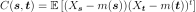
, its correlation function, defined for all
its correlation function, defined for all
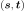
, by such
that for all
such
that for all  ,
,
 .
.
We recall here some useful definitions.
Spatial (temporal) and Stochastic Mean
The spatial mean of the process is the function
 defined by:
defined by:
(1)¶
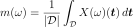
If and if the mesh is a regular grid
 , then the spatial mean corresponds to the
temporal mean defined by:
, then the spatial mean corresponds to the
temporal mean defined by:
(2)¶
is the function
 defined by:
defined by:(3)¶
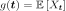
 ):
):(4)¶
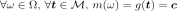
Normal process
A stochastic process is normal if all its finite
dimensional joint distributions are normal, which means that for all
 and
and  , with
, with
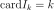
, there exist and
and
 such that:
such that:

where
 ,
and
,
and
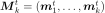
and is the symmetric matrix:
is the symmetric matrix:
(5)¶
A normal process is entirely defined by its mean function  and its covariance function
and its covariance function  (or correlation function
(or correlation function
 ).
).
Weak stationarity (second order stationarity)
A process
is weakly stationary or stationary of second order if
its mean function is constant and its covariance function is invariant
by translation:
(6)¶
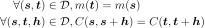
We note  for
for
 as this quantity does not
depend on
as this quantity does not
depend on  .
In the continuous case, must be equal to
as it is invariant by any translation. In the
discrete case, is a lattice
.
In the continuous case, must be equal to
as it is invariant by any translation. In the
discrete case, is a lattice
 where
where
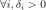
.Stationarity
A process is stationary if its
distribution is invariant by translation:  ,
,
 ,
,
 , we have:
, we have:
(7)¶
Spectral density function
If is a zero-mean weakly
stationary continuous process and if for all ,
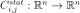
is (ie
(ie
 ),
we define the bilateral spectral density function
),
we define the bilateral spectral density function
 where
where
 is the set of
-dimensional positive definite hermitian matrices, as the
Fourier transform of the covariance function
is the set of
-dimensional positive definite hermitian matrices, as the
Fourier transform of the covariance function  :
:
(8)¶
Furthermore, if for all ,
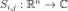
is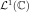
(ie ),
may be evaluated from
),
may be evaluated from  as follows:
as follows:
(9)¶
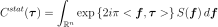
In the discrete case, the spectral density is defined for a zero-mean
weakly stationary process, where
 with
and where the previous integrals are
replaced by sums.
with
and where the previous integrals are
replaced by sums.